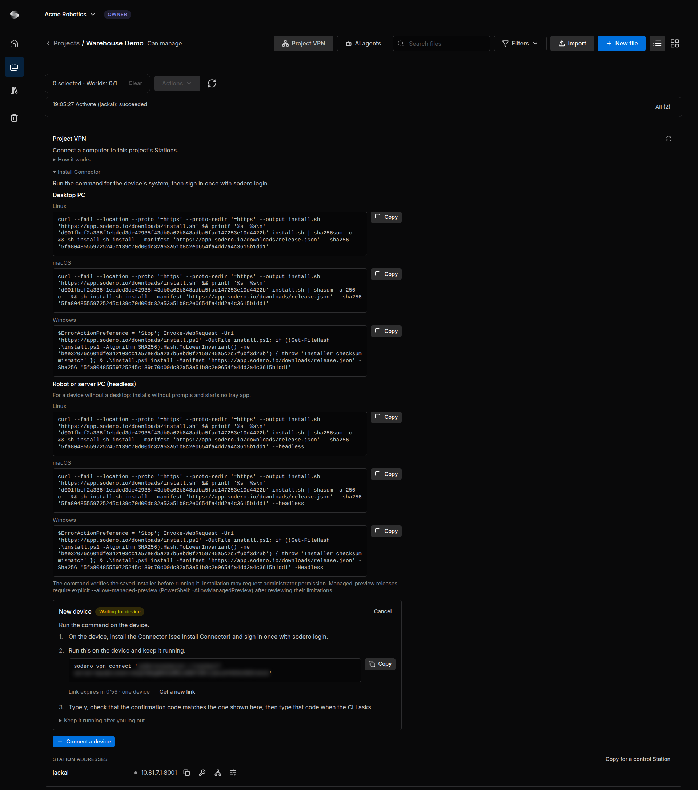

Project VPN¶
The Project VPN connects a device of yours, such as your computer or a robot PC, to the Stations of a project, so you can use a Station's API from a terminal, your own scripts or your IDE. You approve every connection yourself, and a connection lasts at most 8 hours.
AI agents don't need the Project VPN. To work on a project with Claude Code or another AI agent, see AI Agents.
What the Project VPN Reaches¶
A connection reaches each Station (Robot System) of the project that was active when you connected: its API on port 8001, and the extra TCP ports opened for it (VPN Ports). It does not reach Robot Worlds, Stations activated or restarted after you connected, or other projects. Your device can call a Station, but a Station cannot connect to your device.
The Project VPN doesn't start anything: activate the Stations you want to use first (Activate and Run). An active Station uses credits whether or not you are connected, and your tools' calls to it count as use for Auto off.
The project's owner and people with Can manage can connect devices and copy Station API keys. When your role doesn't allow it, the panel says Your project role can't use the Project VPN. Ask the project owner for access.
1. Install Connector¶
Install the Connector once on each device you want to connect. It adds the sodero command, which connects the device.
- Open the project and click Project VPN in the top bar.
- Expand Install Connector. It shows an install command for Linux, macOS and Windows in two groups:
- Desktop PC, for a computer with a desktop;
- Robot or server PC (headless), for a device without a desktop: the command installs without prompts and starts no tray app.
- Copy the command for the device's system and run it on the device: on Linux or macOS in a terminal, as your normal user; on Windows in PowerShell. Approve the administrator prompt.
- Sign in once on the device: run
sodero login. It opens the Sodero sign-in in your browser; without a desktop, it prints the sign-in address and explains how to open it. Finish within 5 minutes.


The command checks the installer before it runs it. On Linux, the installer supports Debian and Ubuntu. On Windows, it also installs WireGuard for Windows, which the Connector uses. Your system lists the Connector as Sodero VPN; on a desktop PC it also adds an optional status icon (Sodero VPN in your app menu, or sodero tray).
This sodero command belongs to the Connector. It is not the sodero CLI of the Stellar X SSH workspace.
2. Connect a Device¶
Every device connects the same way, this computer included.
- Activate at least one Station of the project. In Project VPN, click Connect a device. A new row shows the steps and the command for the device,
sodero vpn connect '…', with a link in it. - Click Copy next to the command, then run the command on the device and keep it running. The link works once, for one device, and only for 60 seconds (Link expires in … · one device); Get a new link replaces it.
- The command shows the project, the device and a six-character Confirmation code. Check that the code matches the one in the portal row, type
yat Connect this device to this project? [y/N], then type the code when the command asks for it. - The row shows Connected. Details lists the Stations in this connection.
The device must be approved within 5 minutes after you click Connect a device. When a request ends before the device connected, the row says Ended before the device connected: …; click Connect a device again.
Approve only a connection you started. If the portal shows a code that differs from the one on your device, another device used the link: cancel it in the portal and don't approve it.
Keep the command running. The device holds the connection: Ctrl+C or closing the terminal disconnects it. Once the row says Connected — the device manages this connection., you can close the portal tab. To keep the connection after you log out of an SSH session, run the command inside tmux or screen.
sodero vpn status shows the connection, sodero vpn disconnect ends it, and sodero --help lists all commands.
3. Use a Station's Address and API Key¶
Each Station has its own address on the Project VPN. It stays the same when the Station is deactivated and activated again. You find it under Station addresses in the Project VPN panel and in the IP address column of the project's Robot Systems.
- Connect your device while the Station is active.
- Click the copy icon next to the Station's address. It copies
http://ADDRESS:8001/. - Click the key icon (Copy the Station's API key). The key is copied to your clipboard; it is never shown on screen.
- In your tools, use the address and send the key with each request. The message that confirms the copy names the request header to use.
The key changes each time the Station starts. After the Station is deactivated and activated again, connect again and copy the new key.
Keep the key private. Treat it like a password: don't paste it into shared documents and don't commit it with your code.
Addresses for a Control Station¶
A control app that runs on one of the project's Stations reaches the other Stations at their address inside the cloud, which your devices can't reach. It changes when the Station restarts.
- The network icon next to a Station copies its address inside the cloud.
- Copy for a control Station copies one line for each running Station: its name, its address inside the cloud and its API key.
4. VPN Ports¶
Besides its API port 8001, a Station can open more TCP ports on the Project VPN, for example for a service of your own module.
- In Station addresses, click the VPN ports button (sliders icon) next to the Station. The dialog VPN ports — name opens.
-
Under Extra TCP ports, enter the ports, for example
9000, 9001, and click Save. -
You can open up to 16 TCP ports from 1024 to 65535. The dialog names the ports that the Station uses itself; they are refused.
- The ports apply the next time the Station starts (VPN ports saved. They apply the next time the Station starts.). Open now lists the ports of the current run. A connected device must connect again to use newly opened ports.
- Only the project's owner and people with Can manage can change VPN ports. Others see them read-only.
- One connection carries at most 64 Station ports. In a project with many Stations, each Station's API port comes first, and some extra ports may be left out.
Protect the services on extra ports. Anyone with an approved connection to the project can reach these ports: the services on them must check their own sign-in.
5. Disconnect¶
Click Disconnect in the device's row in the portal. On the device, press Ctrl+C where sodero vpn connect runs, or run sodero vpn disconnect. On a desktop PC, the status icon also has Disconnect VPN.
A connection also ends on its own after 8 hours; about a minute after the command that holds it stops, for example when the device sleeps; when all its Stations are deactivated or restarted; when you lose access to the project; or when your workspace has used its Project VPN time or data for the month. The Connector never reconnects on its own.
6. Update or Uninstall the Connector¶
To update, run the install command from Install Connector with update in place of install, then connect again. To uninstall, run sodero uninstall (add --purge to also remove the VPN settings and the device identity), or on Windows uninstall Sodero VPN in Installed apps. WireGuard for Windows stays installed.
Limits¶
| What | Limit |
|---|---|
| Open connections per person | 3, across all your projects |
| Connections per device | 1 at a time |
| Length of a connection | 8 hours |
| Link for Connect a device | 60 seconds, one device |
| Approving a device | Within 5 minutes |
| Extra TCP ports per Station | 16, from 1024 to 65535 |
| Station ports per connection | 64 |
| Monthly use | Project VPN time and data per workspace, as your plan allows |
Billing & Usage shows the Project VPN time and data used this month (Billing and Usage). When they are used up, new connections are refused until the counters reset.
Troubleshooting¶
| Message or symptom | What to do |
|---|---|
| No running Station is available for this project. | Activate at least one Station, then connect. |
| You have 3 connections, the maximum. … | Disconnect a connection you don't need, here or in another project. |
| The link expired. Get a new one to continue. | Click Get a new link and run the new command on the device within 60 seconds. |
| The confirmation code did not match. This device was not approved. | Click Connect a device again, run the new command, and type the code exactly as the command shows it. |
| Ended before the device connected: … | The device was not approved within 5 minutes, or the command stopped. Click Connect a device again. |
| A Station is missing, or Some Stations stopped or changed. … | The Station was activated or restarted after you connected. Disconnect, then connect again. |
| A local network or another VPN already routes a target address. | Disconnect the other VPN, or connect from a different network. |
| Not signed in to Sodero … or Your Sodero sign-in has ended … | Run sodero login on the device. |
| A checksum, size or signature mismatch during installation | Don't work around it. Copy the command from Install Connector again; if the mismatch remains, report it to Sodero. |